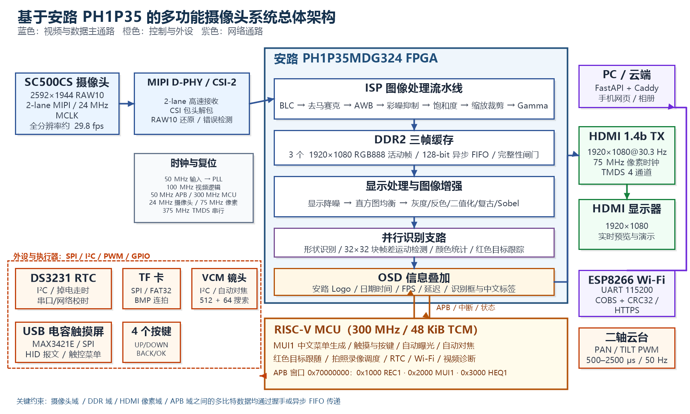
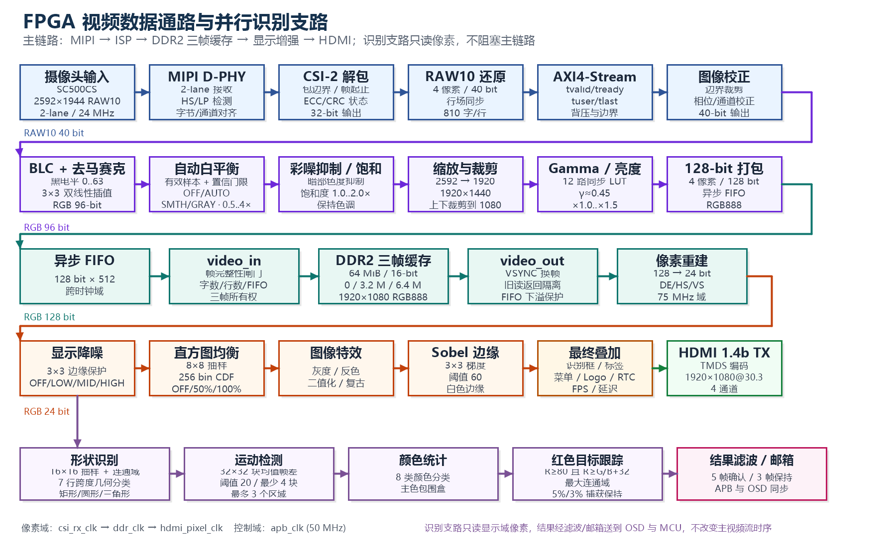
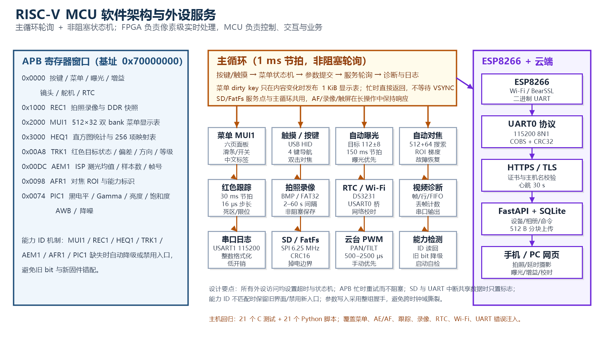
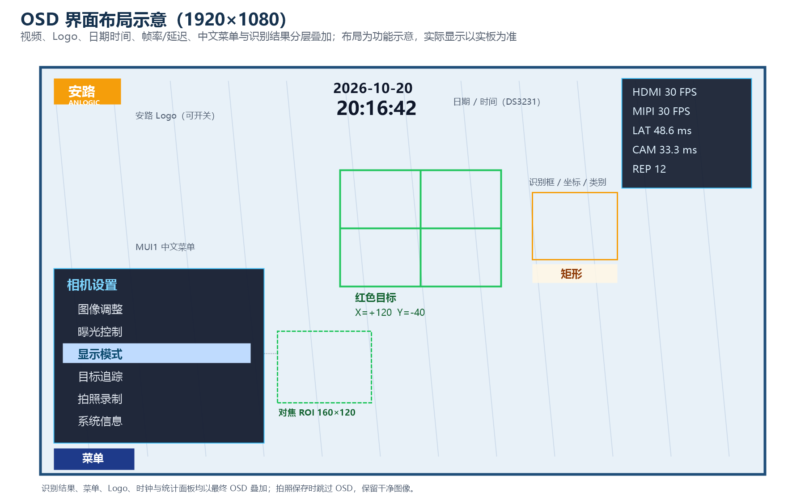

2026 年全国大学生嵌入式芯片与系统设计竞赛
安路赛道 · 选题二：基于安路 PH1P35 的实时数字图像处理系统
作品名称
基于 FPGA 的多功能实时摄像头系统
——MIPI 采集、图像增强、目标跟踪与交互显示一体化设计
参赛平台：HX1P35A / 安路 PH1P35MDG324
开发环境：Anlogic TD 6.2.168116
FD 2026.1 / ModelSim / GCC 13.1.1
作品类型：FPGA 实时图像处理
完成日期：2026 年 10 月
[[PB]]
本作品面向实时视觉应用，基于安路 PH1P35MDG324 FPGA 构建了一套从 MIPI 摄像头采集、图像信号处理、DDR2 多帧缓存到 HDMI 1080p 显示的完整多功能摄像头系统。系统以 2-lane MIPI 接收 SC500CS 的 2592×1944 RAW10 视频，经黑电平校正、去马赛克、自动白平衡、彩噪抑制、饱和度调节、Gamma、亮度调节、3×3 降噪以及 2592→1920 缩放裁剪后，形成 1920×1080 RGB 视频；采用三帧 DDR2 缓存和跨时钟域握手，保证采集、处理、显示互不覆盖。
FPGA 内实现灰度、反色、二值化、复古色、Sobel 边缘提取、直方图均衡等多算法实时切换，并并行完成矩形/圆形/三角形形状识别、32×32 块帧差运动检测、颜色统计和红色目标连通域跟踪。RISC-V MCU 通过 APB 总线负责 MUI1 中文菜单、触摸与按键、自动曝光、VCM 自动对焦、二轴云台跟踪、RTC 校时、TF 卡 BMP 延时摄影和 Wi-Fi 远程控制；OSD 叠加“安路”Logo、日期时间、MIPI/HDMI 帧率、处理延迟与识别结果。
系统已完成 RTL 仿真、MCU 主机回归和完整综合/布局布线。最近一次完整构建占用 19,009/21,216 Slice（89.60%）、95 块 RAM、14 个 DSP，建立/保持时间余量分别为 +0.085 ns 和 +0.020 ns，TNS 均为 0；MCU 固件静态占用 49,096/49,152 字节。作品将实时图像处理、目标感知、机电联动与交互显示集成于一体，具备良好的工程完整性和扩展性。
关键词：FPGA；MIPI；实时图像处理；目标跟踪；HDMI；OSD；RISC-V
[[PB]]
本作品是一台“可采集、可处理、可识别、可交互、可联网”的多功能摄像头。系统以 SC500CS 摄像头为输入，完成 2592×1944 RAW10 视频的实时采集与 1920×1080 HDMI 输出，支持普通预览、图像特效、图形识别、运动检测和红色目标跟踪五种显示模式。图像调节包括黑电平、Gamma、数字亮度、饱和度、白平衡、降噪和直方图均衡，用户可通过触摸或四个物理按键在中文菜单中实时调整。
感知与联动是本作品的重点：FPGA 并行完成形状分类、块帧差运动检测、颜色统计和红色目标连通域分析，识别结果以包围框、类别标签和坐标叠加到画面；MCU 根据红色目标偏差驱动二轴云台，实现“看到—识别—跟随”的闭环。系统还支持 160×120 选区双击对焦、自动曝光、DS3231 掉电走时、TF 卡 640×360 BMP 定时拍摄，以及 ESP8266 Wi-Fi 远程拍照、延时摄影、曝光/增益设置和相册上传。
作品面向低延迟、高实时性的嵌入式视觉场景。在工业检测中，可用于工件形状分类、运动区域报警和实时画面增强；在无人系统与云台中，可作为前端视觉节点完成目标捕获与两轴跟随；在安防与园区监控中，可进行红色目标、运动目标和形状标签的本地叠加，减少对云端算力的依赖。
同时，系统具备完整的采集、显示、存储、联网和交互链路，适合作为机器视觉、数字图像处理、FPGA 系统设计等课程的综合实验平台，也可扩展为便携式智能相机、显微/内窥图像前端、智能零售和农业分选等低成本边缘视觉终端。
| 项目 | 指标 / 实现 |
|---|---|
| FPGA 器件 | 安路 PH1P35MDG324；TD 统计 21,216 Slice、108 块 RAM、40 个 DSP |
| 摄像头 | SC500CS，2592×1944 RAW10，2-lane MIPI，24 MHz MCLK，全分辨率约 29.8 fps |
| 图像处理 | BLC、3×3 去马赛克、AWB、彩噪抑制、饱和度、Gamma、亮度、3×3 降噪、缩放裁剪 |
| 显示输出 | HDMI 1.4b，1920×1080@30.303 Hz，75 MHz 像素时钟，24-bit RGB |
| 帧缓存 | 64 MiB DDR2，16-bit 总线，3 个 1920×1080 RGB888 活动帧，128-bit 异步 FIFO |
| 图像算法 | 灰度、反色、二值化、复古色、Sobel 边缘；直方图均衡 OFF/50%/100% |
| 识别能力 | 120×68 抽样网格；矩形/圆形/三角形；32×32 块帧差，最多 3 个运动区域；红色目标连通域 |
| 云台控制 | PAN/TILT 两轴，500–2500 μs，50 Hz；跟踪节拍 30 ms，单次最大 16 μs |
| 处理延迟 | 按帧起点与双缓冲关系估算约 40–67 ms（LAT），摄像头周期约 33.3 ms（CAM） |
| 资源占用 | Slice 19,009/21,216（89.60%）；LUT6 18,139（85.50%）；RAM 95；DSP 14/40 |
| 时序 | Setup WNS +0.085 ns，Hold WNS +0.020 ns，Setup/Hold TNS 均为 0 |
| MCU 固件 | RV32 300 MHz；text/data/bss = 40,040/168/8,888，合计 49,096/49,152 字节 |
| 存储 | TF 卡 FAT32；640×360 24-bit BMP，691,254 字节/张；间隔 2/5/10/30/60 s |
| 交互与联网 | USB HID 触摸、4 键、DS3231 RTC、ESP8266 115200 UART、COBS+CRC32 |
项目按“需求分解—架构与接口—RTL 实现—分层仿真—综合布局布线—MCU 固件—联合上板”推进：先明确分辨率、时钟域、DDR 带宽、菜单与识别指标，再划分 FPGA/MCU 职责；RTL 采用单元、子系统和全链路三级验证，MCU 用主机 C 测试覆盖菜单、AE/AF、跟踪和存储；最后以 TD 完成综合、布局布线、时序签核与 bitgen，并在实板迭代阈值、方向和布局。
| 阶段 | 主要工作 | 工具 / 产物 |
|---|---|---|
| 需求与架构 | 分辨率、帧率、时钟域、缓存、交互指标 | 框图、接口表 |
| RTL 与仿真 | MIPI/ISP/DDR/显示/识别/OSD + 65 个 TB | Verilog、TD、ModelSim |
| 实现与签核 | 综合、布局、布线、STA、bitgen | TD 6.2.168116 |
| MCU 与联调 | 菜单、AE/AF、跟踪、录像、RTC、Wi-Fi | FD、GCC、Python |
[[PB]]
系统由摄像头、FPGA 视频处理板、HDMI 显示、二轴云台、VCM 镜头、USB 触摸屏、按键、RTC、TF 卡、ESP8266 与云端服务组成，整体框图如图 1 所示。视频主链路为：SC500CS 输出 2-lane MIPI RAW10 → D-PHY 接收与 CSI-2 解包 → RAW10 还原 → 图像校正 → ISP → 128-bit 打包 → 异步 FIFO → DDR2 三帧缓存 → 视频读出 → 显示降噪/直方图均衡/特效/Sobel → 最终 OSD 叠加 → HDMI 1.4b 输出。
控制与业务链路为：RISC-V MCU 通过 APB 访问 FPGA 寄存器，负责菜单生成、触摸/按键、曝光/增益/帧长、镜头对焦、云台 PWM、录像调度、RTC 和 Wi-Fi；FPGA 通过只读能力 ID、状态字和结果邮箱把视频统计、识别结果和录像状态反馈给 MCU。两条链路在“参数整组握手”和“帧边界发布”两处汇合，既保证实时性，又避免跨时钟域撕裂。

图 1 系统总体架构：视频主链路、并行识别支路与 MCU 控制/外设
| 时钟域 | 频率 | 主要用途 |
|---|---|---|
| 系统输入 / PLL | 50 MHz | 板级参考时钟，经 PLL 产生 100/24/50/300/75/375 MHz |
| csi_rx_clk | MIPI 随路时钟 | D-PHY、CSI/RAW10 解包、ISP、图像校正、AE 测光 |
| ddr_clk | DDR2 控制器时钟 | video_in / video_out、128-bit 异步 FIFO、DDR 命令队列 |
| hdmi_pixel_clk | 75 MHz | 显示降噪、HE、特效、Sobel、OSD、HDMI 时序与像素输出 |
| apb_clk | 50 MHz | MCU APB 外设、菜单表、录像寄存器、镜头/DS3231 I²C |
| MCU 内核 | 300 MHz | RISC-V 取指、菜单/业务、USB HID 与 UART 服务 |
| TMDS 串行 | 375 MHz | HDMI 1.4b 10:1 LVDS 串行与 TMDS 编码 |
硬件以 HX1P35A 开发板为核心，主芯片为安路 PH1P35MDG324。该器件集成 38,189 个 LUT4、42,432 个 DFF，片内提供丰富的 ERAM 与 DSP 资源，非常适合像素并行处理。板上提供 64 MiB DDR2、HDMI 输出、MIPI 摄像头接口、USB、TF 卡、按键、RTC 与扩展 GPIO；外部连接 SC500CS 摄像头模组、USB 电容触摸屏、二轴舵机云台、VCM 镜头、DS3231 与 ESP8266。
| 部件 | 型号 / 规格 | 作用 |
|---|---|---|
| FPGA | PH1P35MDG324 | MIPI/ISP/DDR/HDMI/识别/OSD 主处理 |
| 摄像头 | SC500CS，2592×1944，RAW10 | 2-lane MIPI 视频输入，24 MHz MCLK |
| 存储器 | DDR2 64 MiB，16-bit | 三帧视频缓存与录像快照 |
| 显示 | HDMI 1.4b，1920×1080 | 实时预览、菜单与识别结果叠加 |
| 触摸屏 | USB HID 电容屏 + MAX3421E | 菜单点击、滑条、双击对焦、云台拖动 |
| 镜头 | VCM 音圈马达，7-bit 地址 0x0C | 自动对焦与位置读取 |
| 云台 | PAN/TILT 两路舵机，50 Hz | 红色目标自动跟随与手动拖动 |
| RTC | DS3231，I²C 0x68 | 掉电走时、日期时间 OSD、文件时间 |
| 存储卡 | TF 卡，SPI 模式 | FAT32 BMP 拍照与延时摄影 |
| 联网 | ESP8266 / ESP-01 | Wi-Fi、HTTPS、远程控制与照片上传 |
机械结构采用二自由度云台：水平 PAN 舵机固定在底座，垂直 TILT 舵机固定在 U 形支架上，摄像头与镜头模组安装在俯仰支架前端。设计时重点关注三点：一是把摄像头光心尽量靠近两轴交点，减小视差；二是让镜头、FPC 和 HDMI 线在运动范围内留出应力释放弧；三是通过配重和限位避免舵机长期顶死。软件侧对 PWM 做 500–2500 μs 限幅，并在进入/退出跟踪、手动拖动和对焦期间设置等待与保持，降低机械冲击。
图 2 机械结构示意与实物照片占位（请以实际装配照片替换）
电路可分为核心板、摄像头接口、HDMI 接口、USB 触摸接口、存储与时钟、云台/镜头接口六部分。MIPI 差分对按 100 Ω 阻抗设计并做等长；HDMI TMDS 差分对按 100 Ω 阻抗、尽量短且少过孔；USB 触摸模块的 VBUS 与 3.3 V 逻辑电源分开，避免热插拔冲击；舵机使用独立 5 V 供电并与主板共地，防止启动电流拉低数字电源；DS3231 配后备电池与 I²C 上拉；TF 卡与 ESP8266 均按 3.3 V 电平设计。
| 接口 | 关键引脚 | 说明 |
|---|---|---|
| 摄像头 I²C / 时钟 | SCL=K3，SDA=J3，MCLK=L3，RST=L2 | SC500CS 寄存器配置与 24 MHz 主时钟 |
| MIPI | 2 对数据 + 1 对时钟差分 | D-PHY 接收，HS/LP 检测与通道对齐 |
| HDMI | CH0=G16，CH1=F17，CH2=H14，CLK=C17 | TMDS33 差分输出 |
| USB 触摸 | SCLK=K2，MISO=B10，MOSI=C8，SS=A5，INT=L4，RES=M1 | MAX3421E SPI 主机与中断 |
| RTC | SCL=D15，SDA=C18 | DS3231 独立 I²C 总线 |
| 镜头 | SCL=R6，SDA=R7 | VCM 开漏 I²C，约 100 kHz |
| 云台 | PAN=V6，TILT=V4 | 50 Hz PWM，500–2500 μs |
| TF 卡 | CLK=A7，MOSI=A8，MISO=E8，CS=B12 | SPI mode 0，3.3 V |
| 串口 | USART0=ESP8266，USART1=PC 日志 | 115200 8N1，USART1 用于调试与校时 |
图 3 电路模块与关键接口（请以实际原理图/PCB 截图替换占位）
软件按“FPGA 像素域 + MCU 控制域 + ESP8266 网络域 + 云端业务域”四层划分。FPGA 负责所有与像素节拍相关的硬实时任务：MIPI 接收、ISP、DDR 帧缓存、显示增强、识别和 OSD；MCU 负责非实时的控制与业务：菜单、触摸/按键、AE/AF、云台跟随、录像调度、RTC、Wi-Fi 与诊断；ESP8266 负责 TLS/Wi-Fi 与 UART 协议桥；云端提供设备管理、命令队列、照片块上传与网页相册。四层之间只通过有界接口和握手传递状态，避免任何一层阻塞视频主链路。

图 4 FPGA 视频数据通路与并行识别支路
（1）MIPI 接收与 CSI/RAW10 解包。顶层实例化 2-lane D-PHY 接收器，输出随路时钟、HS 有效与 16-bit 数据；csi_unpacket_2lane 解析 CSI-2 短包/长包，产生帧起始、帧结束、行有效与像素数据；raw10_unpacket_2lane 将 4 个 RAW10 像素还原为 40-bit 字，再经 uial2axis 转换为带 tuser/tlast 的流。image_correction 去除去马赛克边界所需的左右各 8 个不完整像素；video_rx_integrity 检查每行 810 个 32-bit 字、每帧 1944 行、Lane 错误和主从采样一致性，为后续“是否发布”提供依据。
（2）ISP 图像处理。isp_top 依次完成黑电平饱和减法、3×3 双线性去马赛克、自动白平衡、暗部彩噪抑制、饱和度增强、缩放与裁剪、Gamma/亮度。AWB 采用灰世界统计，先排除过暗、接近饱和和高色度像素，再用有效样本数、置信门限和 0.5–4× 增益限幅，支持 OFF/AUTO/SMTH/GRAY 四档；SMTH/GRAY 用 1/8 步长 IIR 平滑，候选增益只在帧边界提交。缩放把 2592×1944 等比降到 1920×1440，再上下各裁 180 行得到 1920×1080；Gamma 使用 12 路同步 LUT，亮度提供 ×1.0/×1.125/×1.25/×1.5 四档。
（3）DDR2 三帧缓存。video_in 接收 128-bit 打包像素，经异步 FIFO 跨到 DDR 域，按 0、3,200,000、6,400,000 三个基地址写三块 RGB888 帧缓存；只有字数、行数、FIFO 和接收错误全部满足时才发布新帧，异常帧整帧丢弃。video_out 在 HDMI VSYNC 边界切换读 bank，换帧前先排空旧读请求并复位显示 FIFO，避免旧 bank 返回混入新帧；FIFO 空时当前行剩余区域输出黑色并在下一刷新重试。mc_to_user_interface 把读写请求打包进 155-bit 命令 FIFO，实现读写通道与 DDR 控制器的有序仲裁。
（4）显示增强与图像特效。rgb24_denoise_9 提供 OFF/LOW/MID/HIGH 四档 3×3 边缘保护降噪，强边缘和首行旁路，避免糊边；histogram_equalizer 以 8×8 抽样统计 256 bin 亮度直方图，MCU 计算 CDF 后写入 256 项映射表，支持 OFF/50%/100% 三档，映射表双 bank、帧边界整页切换，保证画面不撕裂；image_filter 提供灰度、反色、二值化（阈值 128）和复古色；sobel_edge 使用 3×3 梯度、阈值 60，输出白色边缘；video_overlay_final 把摄像头处理像素与 OSD 颜色按 overlay 有效信号合成，保证菜单、Logo、时钟和识别标签不被特效破坏。
（5）并行识别支路。red_shape_tracker 以 16×16 抽样构建 120×68 掩码，使用两块掩码 RAM 与洪泛栈在帧间完成 4 邻域连通域分析；红色条件为 R≥80 且 R≥G+32、R≥B+32，首次捕获要求面积≥5%、保持要求≥3%，连续 3 帧确认、连续 5 帧丢失回搜索。shape_component_features 对连通域做 7 行跨度几何分类，输出矩形、圆形、三角形；shape_result_filter 用 5 帧确认、8 帧切换、3 帧保持和中心/面积关联抑制抖动。motion_detect 把画面分成 32×32 块，块均值与上一帧比较，阈值 20、最少 4 块，按列连通段输出最多 3 个运动区域；color_detect 以 16×16 抽样统计 8 类颜色并给出主色包围盒。识别支路只读显示域像素，结果通过滤波器和邮箱送到 OSD 与 MCU，不反压主视频流。
（6）OSD 与 HDMI 输出。ui_osd 负责最终叠加：左上“安路”Logo、顶部居中日期/时间、右上 MIPI/HDMI FPS 与累计帧数、LAT/CAM/REP 统计、菜单面板、识别框/标签、对焦 ROI 和录制指示。MUI1 模式下，MCU 把 16×16 单元、512×32 的双 bank 描述表写入 FPGA，像素端只读当前 bank，提交 toggle 经三拍同步后只在 VSYNC 上升沿换 bank，因此菜单更新不会撕裂画面。中文使用 121 个 32×32 字模，特效名、形状标签和菜单共用同一 ROM 端口；HDMI TX 完成 TMDS 编码、10:1 串行和 4 通道差分输出。
（7）可观测性与诊断。hdmi_frame_stats/mipi_frame_stats 分别统计输出刷新与输入帧起始，形成 FPS 和累计帧数；capture_display_latency 用摄像头帧起始与显示 VSYNC 的时间戳差估算 LAT，并给出 CAM 周期和 REP 重复计数；video_in/video_out 维护 RAW 好坏帧、发布/拒收、FIFO 下溢和 DDR 返回异常计数；lens_i2c_ctrl/ds3231_i2c_ctrl 提供镜头与 RTC 的 ACK、超时、总线状态诊断。所有诊断均为只读或粘滞计数，不改变主链路行为。
（8）跨时钟域与 APB。多比特参数（曝光/增益/VTS、图像控制、菜单表、跟踪结果、AE 测光）采用 toggle 握手、异步 FIFO 或 held-bundle 快照跨域；APB 从机返回 pready=1、pslverr=0，写操作要求全字节 strobe。各功能通过只读 ID 暴露能力：MUI1=0x4D554931、REC1=0x52454331、HEQ1=0x48455131、TRK1=0x54524B31、AEM1=0x41454D31、AFR1=0x41465231、PIC1=0x50494331，MCU 启动时逐项检测，缺失则隐藏入口或降级。
| 模块 | 主要文件 | 职责 |
|---|---|---|
| 顶层 / 时钟 | design_top_wrapper.v、PLL、pll_hdmi.v | 实例化、时钟复位、跨域连接 |
| MIPI / CSI | mipi_dphy_rx_*、csi_unpacket_2lane.v、raw10_unpacket_2lane.v | D-PHY、CSI 解包、RAW10 还原 |
| ISP | isp_top.v、demosaic*、awb.v、BLC.v、rgb24_denoise.v | BLC、去马赛克、AWB、饱和度、Gamma、缩放 |
| DDR 缓存 | video_in.v、video_out.v、mc_to_user_interface.v | 三帧所有权、异步 FIFO、读写仲裁 |
| 显示增强 | image_effects_9.v、histogram_equalizer.v、video_overlay_final | 降噪、HE、特效、Sobel、最终合成 |
| 识别 | red_target_tracker.v、shape_component_features.v、image_features_99.v | 形状、运动、颜色、红色目标 |
| OSD / 外设 | ui_osd.v、ui_font_cn.v、mcu_menu_table.v、sd_recorder.v | 菜单、字库、录像、RTC、镜头、PWM |
MCU 固件运行在 PH1P35 内置 RV32 核上，主频 300 MHz，代码与数据放在 48 KiB TCM 中。启动流程为：初始化时钟/串口 → 读 APB ID → 写默认参数 → 检测 MUI1/REC1/HEQ1/TRK1/AEM1/AFR1/PIC1 能力 → 初始化 USB、RTC、SD、Wi-Fi → 进入 1 ms 主循环。主循环按“按键/触摸 → 菜单状态机 → 参数提交 → AF/录像/RTC/视频诊断/Wi-Fi 服务 → 菜单发布”的顺序轮询，所有长操作（SD 写、UART 等）都拆成状态机或分块任务，避免阻塞触摸与视频诊断。

图 5 RISC-V MCU 软件架构、APB 寄存器与服务划分
（1）MUI1 中文菜单。主菜单包含图像调整、曝光控制、显示模式、目标追踪、拍照录制、系统信息六个功能页；图像页含黑电平、Gamma、数字亮度、饱和度、白平衡、降噪、恢复默认、直方图均衡；曝光页含曝光、增益、帧长和自动曝光开关；显示模式页含普通画面、图形识别、运动检测、红色目标跟踪和图像特效；目标追踪页含跟踪开关、重新识别、自动对焦；拍照录制页含单张拍照、开始/停止、保存间隔、已保存、状态、返回；系统信息页含 Logo 与统计信息开关。触摸支持点击、左右滑条、拖动和双击，物理键支持 UP/DOWN/BACK/OK；菜单状态以 dirty key 比较，只有内容变化才发布 1 KiB 描述表，忙时直接返回，不等待 VSYNC。
（2）自动曝光。FPGA 在 ISP 输出处按 1/128 抽样统计最终 RGB 均值和实际样本数，经 held-bundle 握手送到 APB；MCU 按 (R+2G+B)×2048/samples 还原亮度，目标 112、死区 ±8，至少等待 3 个新帧、间隔 150 ms 才调整。暗时优先延长曝光，到当前 VTS 上限后再加增益；亮时先降增益，再缩短曝光。曝光范围 3..(2×VTS−10)，增益 16..143；自动对焦期间暂停 AE，手动调曝光/增益或 Wi-Fi 写入会退出自动模式。
（3）自动对焦。画面任意位置双击（两次按下位置每轴差≤48 像素、间隔≤350 ms、按住≤250 ms、移动≤16 像素）启动局部对焦；FPGA 在 160×120 选区内统计相邻像素亮度梯度，MCU 用 512 码粗扫 + 64 码细扫（±512）搜索峰值。对焦请求会等待镜头空闲/初始化，最长 1000 ms；失败时做一次 LIC3 恢复；扫描前等待云台稳定，扫描后回读最终位置。AF 全程优先于红色跟踪，手动拖动云台会取消 AF；一次完整扫描约 8 s，完成只代表扫描/回位结束，不等同于光学清晰度验收。
（4）红色目标跟踪与云台。FPGA 输出原子状态字（序号、使能、有效、SEARCH/LOCK/LOST、方向、等级）和 13 位有符号偏差；MCU 每个新结果消费一次，30 ms 控制节拍、单次最大 16 μs 脉宽修正，近中心降低增益，并按滤波后的偏差变化率提前减速。FPGA 侧死区为横向 32/48 像素、纵向 24/36 像素；MCU 保留 500–2500 μs 限幅、200 ms 初始化/重捕获等待、250 ms 数据陈旧保护、手动优先和目标丢失停止追加运动。默认 PAN=−1、TILT=+1，方向和机械行程需按实际云台复核。
（5）拍照录像。REC1 接口把当前显示域像素（特效之后、Logo/菜单之前）按每 3 行/列抽样成 640×360，打包为 128-bit 写入 DDR 快照区；MCU 分块读取快照、写 FAT32 文件，生成 691,254 字节的 24-bit BMP。支持单张和 2/5/10/30/60 s 定时拍摄；保存完成后再抓下一张，不排队补帧；RTC 有效时写入文件时间，否则使用 1980-01-01。SD 初始化、CMD0/CMD8/ACMD41/CMD58、CRC16、写响应与忙等待均有超时和有限降速重试。
（6）RTC 与校时。DS3231 挂在独立 I²C 总线上，FPGA 完成秒边界重读、超时和总线恢复；MCU 解析 USART1 的 `RTC SET/GET` 命令或 Wi-Fi `TIME_SET`，通过 APB 提交，FPGA 写 0x00–0x06 后逐字节回读，只有完全一致才清 OSF 并发布可信快照。屏幕顶部显示 YYYY-MM-DD 与 HH:MM:SS，未校时/OSF/通信失败显示横线；串口定时输出 TIME/health/fault/osf 诊断。
（7）USB 触摸、Wi-Fi 与诊断。MAX3421E 经 QSPI1 单线 SPI 访问，MCU 完成 USB 枚举、HID 报告描述符解析和触摸报文解码（报告 ID 0x0d，12/14 位坐标），再映射到 1920×1080 菜单坐标；USART0 与 ESP8266 使用 COBS+CRC32、停止等待和序号去重，USART1 保留 PC 校时与日志；视频诊断每 2 s 读取 RAW 好坏帧、发布/拒收、显示下溢等计数。固件使用 -Os/LTO，保留 1 KiB 堆和 2 KiB 栈，当前静态占用 49,096/49,152 字节，后续加功能必须先做 TCM 容量核算。
ESP8266 固件基于 Arduino Core 3.1.2，负责 Wi-Fi 连接、SNTP 时间、BearSSL HTTPS、UART RPC、命令状态机与照片块上传。UART 协议采用 COBS 组帧 + CRC32、115200 8N1、停止等待；照片按 512 字节分块上传，服务器完整校验 ID、长度、CRC 和 BMP 结构后才允许 `PHOTO_COMMIT`，源文件不删除。设备每 30 s 心跳，命令采用 queued→claimed→dispatched→succeeded/failed/unknown 状态机，租约 120 s，未知结果不自动重放。
云端为 FastAPI + SQLite + Caddy + Docker Compose 的单设备服务，提供设备认证、心跳、时间、命令队列、照片注册/分块/完成、手机/桌面网页相册与远程控制。网页支持单张拍照、延时摄影开始/停止、曝光 3..3990、增益 16..143 和拍照间隔选择；照片默认配额 2 GiB，达到上限返回 507，不自动删除原图。当前已完成本地 17 项服务器单元测试、ESP 主机测试和“ESP + MCU 传输 + 服务器”三方本地联测（25 次 HTTP 请求、丢包恢复、一次拍照/提交/下载），但公网部署、真实域名/CA、板端 TLS 握手和长时间上传仍需现场验收。
| 地址 / 接口 | 方向 | 内容 |
|---|---|---|
| 0x70000000 + 0x00 | RO | UI ID / 按键 / 菜单 / 曝光 / 增益 / 镜头 / 舵机 / RTC |
| 0x70001000 | RW | REC1：抓帧请求、快照字数、DDR 读索引、SPI 与错误状态 |
| 0x70002000 | RW | MUI1：512×32 双 bank 菜单描述表，1 KiB/次提交 |
| 0x70003000 | RW | HEQ1：直方图捕获、256 项映射表、使能与状态 |
| 0x700000A8 / 0xAC / 0xB0 | RO | TRK1：能力 ID、原子状态字、13 位 X/Y 偏差 |
| 0x700000DC / 0xE0 / 0xE4 / 0xE8 | RO | AEM1：测光均值、样本数/帧号、传感器就绪 |
| 0x70000094 / 0x98 | RW/RO | AFR1：对焦 ROI、能力标识 |
| 0x70000070 / 0x74 | RW/RO | PIC1：黑电平/Gamma/亮度/饱和度/AWB/降噪 |
[[PB]]
系统已完成从摄像头到 HDMI 的完整链路搭建，FPGA 位流、MCU 固件、触摸屏、RTC、TF 卡、镜头与二轴云台均已联机。实板运行时，HDMI 显示器呈现 1920×1080 实时画面，左上角显示“安路”Logo，顶部居中显示日期时间，右上角显示 MIPI/HDMI FPS 与延迟统计，左下角为 MUI1 中文菜单；通过触摸或按键可切换普通画面、图形识别、运动检测和红色目标跟踪，识别框、类别标签与坐标直接叠加在视频上。
图 6 系统实物照片占位（请以实际拍摄照片替换）
二自由度云台已完成摄像头、镜头与支架的装配，PAN/TILT 两轴在 500–2500 μs 范围内运动平稳，线缆在全程行程内无拉扯。摄像头光心尽量靠近两轴交点，俯仰支架预留 FPC 弯曲半径；底座与舵机之间加缓冲垫，降低高频抖动。实板测试中，红色目标从画面边缘移动到中心时，云台能够连续跟随；目标丢失后保持最后位置，重新捕获后恢复。
电路已完成核心板、摄像头转接、HDMI、USB 触摸、TF 卡、RTC、镜头与舵机接口的连接与供电检查。MIPI 与 HDMI 差分对工作稳定，USB 触摸枚举与 HID 报文正常，DS3231 在备用电池下保持走时，TF 卡可完成 FAT32 挂载与 BMP 写入，舵机独立供电未对视频链路造成明显干扰。关键接口与引脚见下表。
软件成果包括 FPGA 位流、MCU RAM/XIP 固件、ESP8266 固件与云端服务。FPGA 侧实现采集、ISP、DDR、显示增强、识别和 OSD；MCU 侧实现六页中文菜单、AE/AF、红色跟踪、录像、RTC 与 Wi-Fi；云端提供设备管理、命令队列与相册。界面布局如图 7 所示：视频全屏显示，Logo、日期时间、统计面板、菜单和识别结果分层叠加，拍照保存时自动跳过 OSD，得到干净图像。
[[PB]]

图 7 OSD 界面布局示意：Logo、日期时间、FPS/延迟、MUI1 菜单、识别框/坐标与对焦 ROI
| 软件产物 | 内容 / 说明 |
|---|---|
| FPGA 位流 | TD 6.2.168116 完整综合/布局/布线/bitgen，最近构建 2026-10-20 |
| MCU RAM 固件 | anlu_app.elf，TCM 调试版，49,096/49,152 字节 |
| MCU Flash 固件 | anlu_app2.elf，XIP 版，35,860/152/8,480 字节 |
| 云端服务 | FastAPI + SQLite + Caddy + Docker Compose，手机/桌面网页 |
| 测试与构建 | 65 个 RTL testbench、21 个 C 主机测试、21 个 Python 脚本、37 个 Tcl 构建脚本 |
| 类别 | 要求 | 本作品实现 | 状态 |
|---|---|---|---|
| 基础 | MIPI 采集 + HDMI 实时显示 | 2-lane SC500CS 2592×1944 RAW10 → 1920×1080@30.3 Hz HDMI | 已实现 / 实板 |
| 至少一种图像处理算法 | 灰度、反色、二值化、复古、Sobel、HE、AWB、Gamma、降噪等 | 已实现 / 实板 | |
| 处理结果稳定输出 | 三帧缓存 + 完整性闸门 + FIFO 下溢保护，画面连续 | 已实现 / 实板 | |
| OSD 叠加与“安路”Logo | Logo、日期时间、FPS/延迟、菜单、识别框/标签 | 已实现 / 实板 | |
| 基础扩展 | 风格化 / 视觉增强 | 五种特效、Sobel、HE、AWB、Gamma、亮度/饱和度、3×3 降噪 | 已实现 |
| 目标检测与识别 | 矩形/圆形/三角形、运动区域、颜色统计、红色目标 | 已实现 / 实板 | |
| 高阶挑战 | 多算法切换与状态显示 | 显示模式页 4 模式 + 特效，中文标签实时显示当前算法 | 已实现 |
| 动态目标跟踪与坐标 | 红色目标框/中心/死区，X/Y 坐标与方向/等级，云台闭环 | 已实现 / 实板 | |
| 处理延迟可视化 | LAT/CAM/REP 三行统计，LAT 约 40–67 ms（估算） | 已实现 | |
| 硬件运动目标检测 | 32×32 块均值帧差，最多 3 个运动区域与计数 | 已实现 | |
| 自动曝光/白平衡/HE | AE 闭环、AWB 四档、HE OFF/50%/100% | 已实现 | |
| 创新 | 实际场景 + 外部控制 / 联网 | 二轴云台跟随、TF 卡延时摄影、ESP8266 远程控制与相册 | 部分实板 / 云端待部署 |
| 指标 | 结果 | 说明 |
|---|---|---|
| Slice / LUT6 | 19,009/21,216（89.60%）/ 18,139（85.50%） | TD 6.2.168116 完整布局布线，2026-10-20 |
| RAM / DSP | 95 / 14（DSP 35%） | 108 块 RAM、40 个 DSP 的器件 |
| 时序 | SWNS +0.085 ns，HWNS +0.020 ns | Setup/Hold TNS 均为 0，违例端点 0 |
| 摄像头 / 显示 | 约 29.8 fps / 30.303 Hz | 2592×1944 全分辨率；1920×1080 输出 |
| 处理延迟 | LAT 约 40–67 ms；CAM 约 33.3 ms | 按帧起点与双缓冲关系估算，非 glass-to-glass |
| 菜单刷新 | 1 KiB/次，512×32 双 bank | VSYNC 边界整页切换，不撕裂 |
| 中文界面 | 121 个 32×32 字模，六页菜单 | 菜单、特效名、形状标签共用字库 |
| 录像 | 640×360 BMP，691,254 字节/张 | 2/5/10/30/60 s 间隔，FAT32 |
| MCU 资源 | 49,096/49,152 字节 | 1 KiB 堆 + 2 KiB 栈，余量 56 字节 |
| 跟踪控制 | 30 ms 节拍，最大 16 μs/次 | 死区 32/48、24/36 像素；500–2500 μs 限幅 |
RTL 侧共有 65 个 testbench，覆盖 MIPI/CSI 包边界、RAW10 还原、ISP 全链路、AWB 全帧统计、Gamma 逐像素等价、DDR 三帧所有权、显示 FIFO 下溢、HE 全 1080p、形状/运动/红色跟踪、菜单/OSD/字库、RTC/镜头 I²C、SD/FatFS 和 CDC 握手。典型结果包括：全链路仿真从 1,574,640 个 RAW32 字还原到 1,259,712 个 RAW40 字，再打包为 388,800 个 128-bit 字并成功发布一帧；OSD 18 个场景逐像素比对 37,324,800 个有效像素；菜单 738,347 个像素采样；AWB 2592×1944 全帧 19,683 个有效样本门限；DDR 缓存测试覆盖 9 个成功帧和 5 类拒收帧；红色跟踪覆盖 4,080 个分离红点与 1080p 边界。
MCU 侧有 21 个 C 主机测试与 21 个 Python 回归脚本，覆盖菜单导航、AE 闭环/边界、AF 等待/恢复/仲裁、跟踪方向与限速、录像/FatFs、RTC 解析、Wi-Fi 协议、UART 错误注入和 ELF 启动/堆栈布局。FPGA 侧 37 个 Tcl 构建脚本均要求最终 setup/hold 通过才生成 bit。最近一次完整构建于 2026-10-20 完成，资源与时序见下表。实板已验证摄像头采集、HDMI 显示、菜单/触摸、RTC、SD 挂载和红色跟踪基本链路；Wi-Fi 公网部署、TLS 真机握手和长时间连续录像仍在持续验证，报告中不将离线联调等同于公网验收。
本作品是“实时视觉前端 + 机电联动”的工程实现，不是通用 AI 相机。形状识别稳定输出矩形、圆形、三角形三类；红色跟踪是单目标颜色/连通域跟踪；LAT 是按帧起点和双缓冲关系估算的处理延迟；摄像头约 29.8 fps 与 HDMI 30.303 Hz 独立定时。云端已完成协议、服务器和本地三方联调，但公网部署与板端 TLS 仍需验收；MCU TCM 仅余 56 字节，后续扩展应优先迁移到 XIP 或增加 ERAM/DDR 缓冲。
[[PB]]
系统仍有清晰的扩展空间。视频侧可提升到更高分辨率/帧率，增加 4-lane MIPI、HDR、3D 降噪和几何校正；识别侧可把形状/颜色/运动特征送入轻量 CNN 或 NPU，实现多目标检测、手势/人脸/车牌等语义任务；跟踪侧可从单目标颜色跟踪扩展到 KCF/ByteTrack 等多目标算法，并加入云台 PID 与机械位置反馈；联网侧可把当前 BMP 分块上传扩展为 JPEG/RTSP/WebRTC 实时视频，接入 MQTT/ONVIF 或边缘 AI 平台；工程侧可增加看门狗、参数掉电保存、OTA、日志落盘和自动化回归，进一步提升长期运行可靠性。
这个项目让我们最深的体会是：“能出图”与“稳定出好图”之间，隔着完整的工程方法。最初我们以为只要把 MIPI、ISP、DDR 和 HDMI 串起来就能工作，真正联调后才发现，问题往往不在某一个算法，而在时钟域、帧所有权、FIFO 背压和异常恢复。摄像头域、DDR 域、HDMI 像素域和 APB 域彼此异步，任何一个多比特信号直接跨域，都可能在某个温度、某个帧边界变成花屏或黑屏。后来我们把“参数整组握手”“帧边界发布”“异常帧整帧丢弃”“旧读返回隔离”做成硬约束，才把画面稳定下来。这个过程让我们真正理解了“硬件并行”不仅是快，更是必须把时序和所有权讲清楚。
第二个体会是验证要分层，且要敢于暴露边界。我们没有只跑一个“看起来正常”的全链路仿真，而是把 CSI 包边界、RAW10 行字数、AWB 全帧统计、Gamma 逐像素等价、DDR 三帧所有权、HE 全 1080p、菜单/字库像素、RTC/镜头 I²C、SD/FatFs 和 CDC 握手拆成 65 个 testbench；MCU 侧用 21 个 C 主机测试和 21 个 Python 回归覆盖菜单、AE/AF、跟踪、录像、RTC 和 Wi-Fi。每一步都要求“可复现、可定位、可回退”。我们也逐渐接受：仿真通过不等于实板通过，离线联调不等于公网验收。因此报告里保留了 LAT 是估算、Wi-Fi 仍待部署、TCM 只剩 56 字节等边界说明，这比夸大结果更有价值。
第三个体会是FPGA 与 MCU 的分工要克制。像素级、节拍固定的任务放在 FPGA，控制、交互和业务放在 MCU；MCU 不碰视频搬运，FPGA 不承担复杂状态机。MUI1 菜单表是一个典型例子：MCU 只写 1 KiB 描述，FPGA 在 VSYNC 边界换 bank，既保留了中文菜单的灵活性，又避免全屏 framebuffer 和带宽浪费。AE/AF/跟踪的仲裁也遵循同样原则：FPGA 给出原子结果，MCU 用统一状态机决定“谁拥有云台/曝光/镜头”，避免多个服务互相抢占。正是这种边界感，让系统在资源紧张、时序余量很小的情况下仍然可维护。
第四个体会是资源与时序是设计出来的，不是最后“优化”出来的。PH1P35 的 Slice 占用最终达到 89.60%，建立时间余量只有 0.085 ns。我们通过 Gamma 同步 ROM、移位加代替常数乘法、共享字库、ERAM 换逻辑、识别支路只读不反压等方式，把资源一点点抠出来；也通过“最终 setup/hold 不通过就不 bitgen”的构建门禁，避免把时序问题带到板上。这个过程很枯燥，但让我们养成了看综合报告、看 CDC 约束、看 FIFO 水位的习惯。
最后，感谢这次竞赛让我们把课堂上的图像处理、计算机组成、数字电路和嵌入式软件真正连成了一条线。我们最大的收获不是某一个算法，而是面对一个复杂系统时，如何拆解指标、定义接口、建立验证、定位问题并做出取舍。未来我们希望继续补齐 Wi-Fi 公网部署、长时录像、多目标跟踪和更高分辨率链路，把这台“多功能摄像头”做得更稳、更小、更实用。
[[PB]]
[1] 全国大学生嵌入式芯片与系统设计竞赛组委会. 2026 年全国大学生嵌入式芯片与系统设计竞赛 FPGA 创新设计赛道选题指南（安路赛道）[Z]. 2026.
[2] 上海安路信息科技股份有限公司. PH1P35 系列 FPGA 数据手册与 TD 软件用户指南[Z]. 2025.
[3] 上海安路信息科技股份有限公司. Tang Dynasty 6.2 设计流程与时序约束指南[Z]. 2025.
[4] SmartSens. SC500CS CMOS Image Sensor Datasheet V1.8[Z]. 2023.
[5] MIPI Alliance. MIPI Alliance Specification for D-PHY[S]. 2014.
[6] MIPI Alliance. MIPI Alliance Specification for Camera Serial Interface 2 (CSI-2)[S]. 2019.
[7] HDMI Licensing, LLC. HDMI Specification Version 1.4b[S]. 2011.
[8] Maxim Integrated. MAX3421E USB Peripheral/Host Controller with SPI Interface Datasheet[Z]. 2019.
[9] Maxim Integrated. DS3231 Extremely Accurate I²C-Integrated RTC/TCXO/Crystal Datasheet[Z]. 2015.
[10] Elm-Chan. FatFs Generic FAT File System Module R0.15[CP/OL]. https://elm-chan.org/fsw/ff/, 2024.
[11] Espressif Systems. ESP8266 Arduino Core 3.1.2 Documentation[EB/OL]. https://arduino-esp8266.readthedocs.io/, 2024.
[12] Motorola Mobility LLC. kernel-mtk: ellis_lce_sc500csmipiraw_Sensor.c[CP/OL]. https://github.com/MotorolaMobilityLLC/kernel-mtk, 2023.
[13] R. C. Gonzalez, R. E. Woods. Digital Image Processing (4th Edition)[M]. Pearson, 2018.
[14] I. Sobel, G. Feldman. A 3×3 Isotropic Gradient Operator for Image Processing[R]. Stanford Artificial Intelligence Project, 1968.
[15] Google. Noto Sans SC, SIL Open Font License 1.1[EB/OL]. https://github.com/google/fonts/tree/main/ofl/notosanssc, 2024.